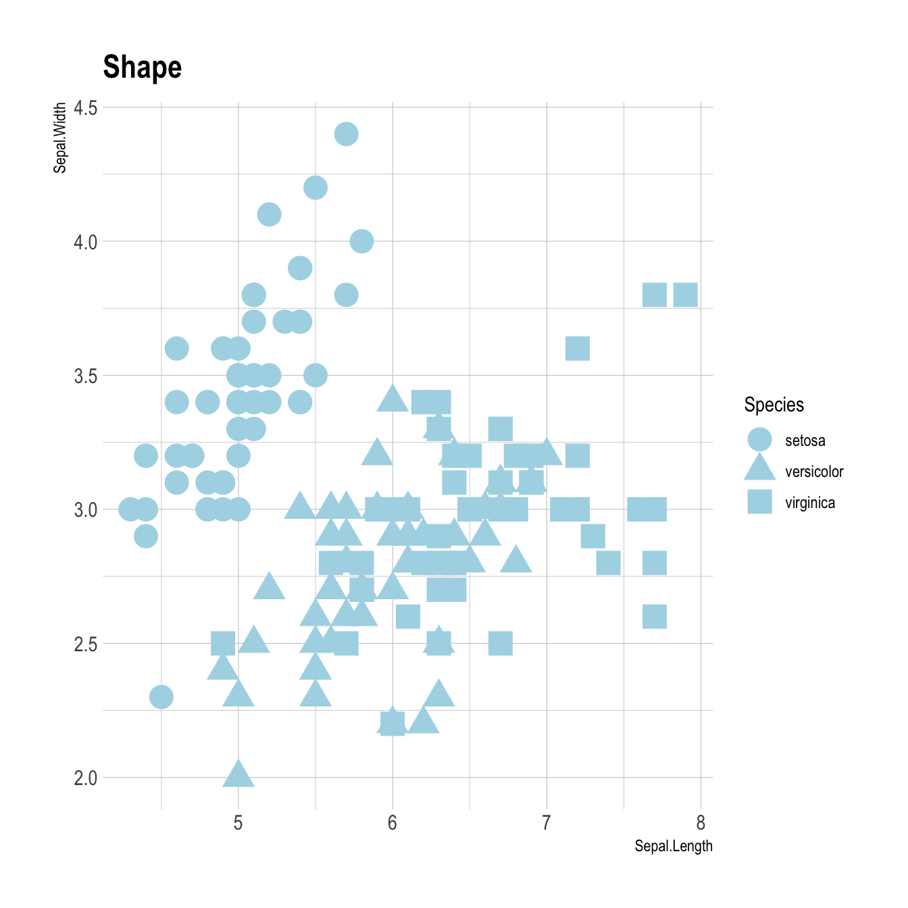
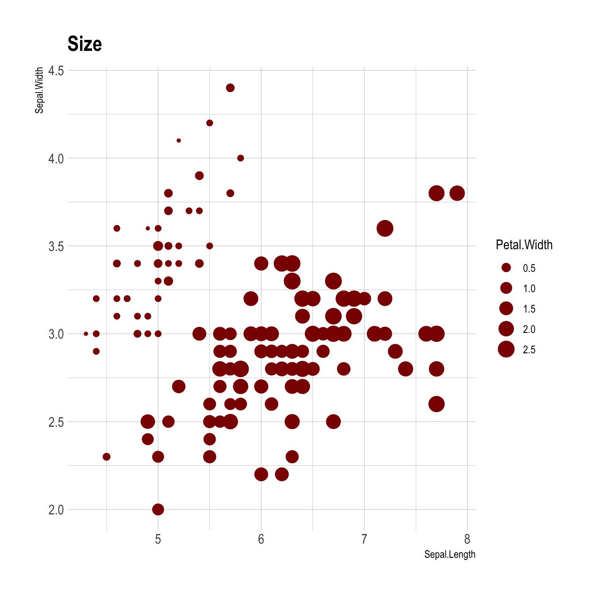

Related chart types

Scatter

Heatmap

Correlogram

Bubble

Connected scatter

Density 2d
ggplot2 allows to easily map a variable to marker features of a scatterplot. This post explaines how it works through several examples, with explanation and code.
Here is the magick of ggplot2: the ability to map a variable to marker features. Here, the marker color depends on its value in the field called Species in the input data frame.
Note that the legend is built automatically.
# load ggplot2
library(ggplot2)
library(hrbrthemes)
# mtcars dataset is natively available in R
# head(mtcars)
# A basic scatterplot with color depending on Species
ggplot(iris, aes(x=Sepal.Length, y=Sepal.Width, color=Species)) +
geom_point(size=6) +
theme_ipsum()You can map variables to any marker features. For instance, specie is represente below using transparency (left), shape (middle) and size (right).
# load ggplot2
library(ggplot2)
library(hrbrthemes)
# Transparency
ggplot(iris, aes(x=Sepal.Length, y=Sepal.Width, alpha=Species)) +
geom_point(size=6, color="#69b3a2") +
theme_ipsum()
# Shape
ggplot(iris, aes(x=Sepal.Length, y=Sepal.Width, shape=Species)) +
geom_point(size=6) +
theme_ipsum()
# Size
ggplot(iris, aes(x=Sepal.Length, y=Sepal.Width, shape=Species)) +
geom_point(size=6) +
theme_ipsum()
Last but not least, note that you can map one or several variables to one or several features. Here, shape, transparency, size and color all depends on the marker Species value.
Related chart types